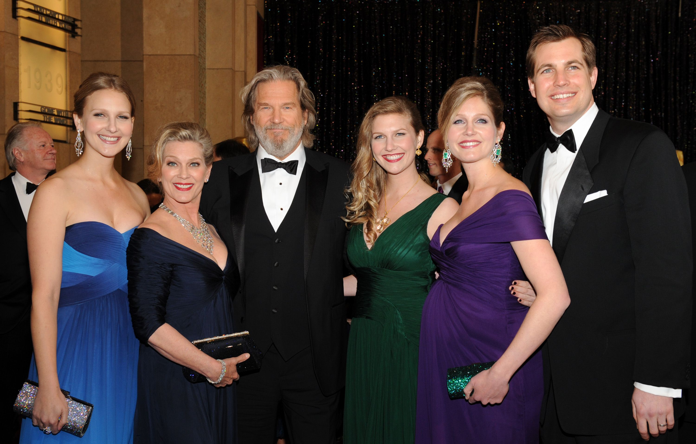
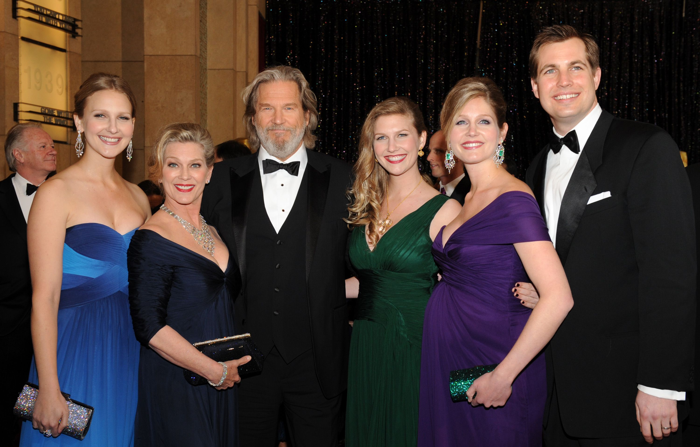

- About Me
- |
- My Photos
- |
- My Playlist
- |
- Like
- |
- QR code
- |
- Q&A
- |
- Contact Me
- |

Jeffrey Leon Bridges (born December 4, 1949) is an American actor. Known for his leading man roles in film and television, he has received various accolades throughout his career spanning over seven decades, including an Academy Award, two Golden Globe Awards, and a Screen Actors Guild Award. He received the Cecil B. DeMille Award in 2019, and the Critics Choice Lifetime Achievement Award in 2023.
Bridges comes from a prominent acting family and appeared on the television series Sea Hunt (1958–1960) alongside his father Lloyd and brother Beau. He received the Academy Award for Best Actor for his role as an alcoholic singer in Crazy Heart (2009). Other Oscar-nominated roles include The Last Picture Show (1971), Thunderbolt and Lightfoot (1974), Starman (1984), The Contender (2000), True Grit (2010), and Hell or High Water (2016). He also starred in The Fabulous Baker Boys (1989), The Fisher King (1991), The Big Lebowski (1998) and Bad Times at the El Royale (2018), along with the commercially successful films King Kong (1976), Tron (1982), Iron Man (2008), and Tron: Legacy (2010).
He earned a nomination for Primetime Emmy Award for Outstanding Lead Actor in a Limited or Anthology Series or Movie for his role in the HBO film A Dog Year (2009). He returned to television for a role as a former CIA operative in the FX series The Old Man (2022).

 


Q1:
3 Differences:
1. Creation of Content -
Web1 was a static web where the content was mainly created by web developers.
Web2 and Web3 are interactive webs where the content is created by users themselves.
2. Uses -
Web1 was primarily a one-way communication medium, with the web pages consisting of static content that could not be
updated in real-time.
Web2 introduced dynamic content, allowing users to interact with websites through social media platforms, blogs,
wikis, and other interactive features.
Web3 is designed to provide even greater interactivity, with the ability to use smart contracts to automate
processes and create decentralized applications.
3. Commerce -
Web1 was primarily used for the distribution of information, with limited e-commerce capabilities.
Web2 introduced e-commerce and online transactions as well as social networking platforms.
Web3 is designed to provide an even greater level of security and privacy for e-commerce, enabling secure
transactions that are not reliant on centralized intermediaries.
Q2:
A use case that would be different in Web1 and Web2 is online communication.
In Web1, online communication was mainly limited to email and basic chat rooms, and collaboration was mostly done
through email
attachments.
Web1 lacked the real-time, interactive capabilities that Web2 provides.
With the emergence of Web2, communication and collaboration have become much more dynamic and interactive.
Web2 platforms such as social media, messaging apps, and online collaborative tools like Google Docs allow users to
communicate in real-time, share and edit documents simultaneously.